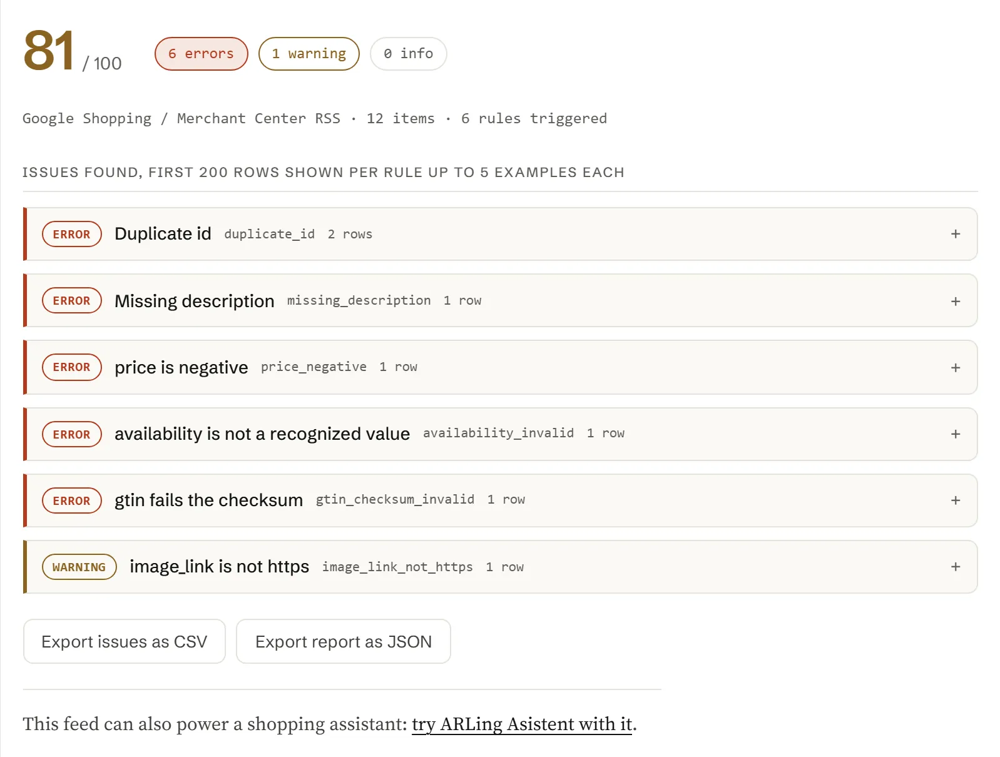

Product Feed Doctor:nájdite, čo je vo vašomproduktovom feede zle,skôr než to nájde Google, Metaalebo váš AI asistent
Vložte URL feedu, vložte obsah feedu alebo nahrajte súbor: Google Shopping/Merchant Center RSS, katalógové CSV z Facebooku/Mety, Shopify /products.json, WooCommerce Store API JSON, všeobecný XML feed alebo obyčajné CSV. Dostanete skóre zo 100, prehľad pravidlo po pravidle a presné riadky na opravu, všetko vo vašom prehliadači.
- 31 kontrolovaných pravidiel
- 6 formátov feedu
- 0 €, bez účtu
- nič sa nikam nenahráva

Skontrolujte svoj feed
Všetko nižšie beží vo vašom prehliadači. Vložte URL feedu a kliknite na tlačidlo Stiahnuť a analyzovať, vložte obsah feedu priamo, nahrajte stiahnutý súbor alebo načítajte zabudovanú ukážku a pozrite si, ako prehľad vyzerá.
31 pravidiel, každé so závažnosťou a s riešením na jeden riadok.
Každé pravidlo nižšie má stabilné ID, závažnosť (error, warning alebo info) a tam, kde to prichádza do úvahy, aj pole zo špecifikácie produktových údajov Merchant Center, ktoré kontroluje. Táto tabuľka sa generuje priamo zo súboru feed-doctor.js, takže sa nikdy nerozíde s tým, čo nástroj naozaj robí.
| Závažnosť | ID pravidla | Pole | Čo kontroluje |
|---|
Šesť chýb, ktoré sa objavia takmer v každom feede.
Väčšina feedov padá na malej skupine stále rovnakých chýb. Tu je, čo každú z nich spôsobuje a ako ju najrýchlejšie opraviť.
-
V poli description ostalo HTML.
Shopify's body_html a WooCommerce description obsahujú neupravené HTML značky. Pred exportom značky odstráňte alebo pole prežeňte cez konvertor na čistý text; description sa má čítať ako súvislý text, nie ako HTML.
-
Hodnota availability zapísaná ako voľný text.
„Available“, „In Stock!“, „2 left“ a podobné hodnoty sa nerozpoznajú. Stav skladu namapujte presne na jednu z hodnôt in stock, out of stock, preorder or backorder ešte pred exportom.
-
Cena bez meny.
Samotné „19.99“ je nejednoznačné. Pole price vždy exportujte ako sumu spolu s kódom meny podľa ISO, napríklad 19.99 USD, a dbajte na to, aby sale_price používalo rovnakú menu a bolo nižšie ako price.
-
Zle prepísaný alebo skopírovaný GTIN.
Jediná prehodená číslica na prvý pohľad vyzerá správne, ale neprejde kontrolnou číslicou. Radšej čiarový kód znova naskenujte alebo skopírujte z obalu produktu či z dátového listu dodávateľa, než by ste ho prepisovali ručne.
-
Varianty bez veľkosti alebo farby.
If item_group_id spája varianty, každý riadok aj tak potrebuje vlastné hodnoty v poliach size a/alebo color (prípadne v inom rozlišovacom poli), inak Google ani Meta varianty od seba v prehľade či v inzeráte nerozlíšia.
-
Duplicitné id po opätovnom exporte.
Migrácia alebo prechod na inú platformu často použije rovnaké id znova alebo ich prepíše na číslo riadku, ktoré sa v rôznych kategóriách opakuje. id musí byť jedinečné počas celej životnosti položky; ak musíte SKU použiť znova, pridajte mu predponu podľa zdroja.
Premeňte svoj feed na nákupného asistenta
Keď je feed čistý, tie isté produktové údaje môžu poháňať chatovacieho asistenta vo vašom e-shope, ktorý zo skutočného katalógu odpovie na otázky ako „máte to aj v modrej“ alebo „čo máte na sklade do 30 eur“.
ARLing Asistent číta váš produktový feed a odpovedá na otázky zákazníkov priamo vo vašom e-shope, vo vašom jazyku, bez toho, aby ste museli prepisovať katalóg.
Pozrieť ARLing AsistentJedna funkcia. Dnu ide text feedu, von ide prehľad.
Žiadny server, žiadny API kľúč, žiadna registrácia. feed-doctor.js je čistý JavaScript: prečítajte si ho, urobte si z neho fork alebo ho spustite vo vlastných skriptoch či v CI.
import { analyze } from './feed-doctor.js'; // or, loaded globally: const { analyze } = window.FeedDoctor; const report = analyze(feedText); // report { "format": "google_rss" | "facebook_csv" | "generic_csv" | "shopify_json" | "woocommerce_json" | "generic_xml", "productCount": 12, "score": 0-100, "counts": { error, warning, info }, "rules": [ { id, severity, spec, title, count, examples } … ], "problems": // only the triggered rules, sorted by severity "issues": // first 200 individual issues, one row per problem "truncated": true | false }
Všetko beží vo vašom prehliadači. Nástroj vyššie volá presne túto funkciu vo vašom prehliadači. Nie je za tým žiadny backend, žiadny API kľúč ani žiadna požiadavka, ktorá by váš feed niekam posielala (jediná výnimka je stiahnutie URL, ktorú vložíte: tú volá váš prehliadač priamo).
Formát rozpozná zo samotného obsahu, každý riadok prevedie na jednotný tvar produktu (id, title, description, link, image_link, price, currency, availability, brand, gtin, mpn, condition, google_product_category, item_group_id, sale_price, shipping) a na každý riadok použije všetkých 31 pravidiel.
Zadarmo.
Bez účtu, bez platby, bez limitu na použitie: beží ako statická stránka vo vašom prehliadači, takže niet servera, ktorý by bolo treba platiť.
Dajte mi vedieť, keď pribudne nový nástroj. Len nové nástroje. Žiadny newsletter, žiadne zdieľanie. Na odhlásenie stačí odpovedať na ktorýkoľvek e-mail.
Ďakujeme. Ozveme sa vám len vtedy, keď spustíme niečo nové.
Nepodarilo sa uložiť. Napíšte na podpora@arling.sk.
Otázky, ktoré ľudia naozaj hľadajú.
Priame odpovede na tie isté otázky o produktovom feede, ktoré tento nástroj kontroluje, pre prípad, že potrebujete len odpoveď a nie samotný nástroj.
Aké formáty feedu Product Feed Doctor podporuje?
Google Shopping / Merchant Center RSS 2.0 (formát s menným priestorom g: , s tagom atom:link aj bez neho), katalógové CSV z Facebooku/Mety, export zo Shopify z adresy /products.json , odpoveď WooCommerce Store API vo formáte JSON, všeobecný XML feed poskladaný z opakujúcich sa prvkov <item> s rôznymi názvami tagov a obyčajné CSV s hlavičkovým riadkom. Formát sa rozpozná automaticky z obsahu, ktorý vložíte, nahráte alebo stiahnete; nikdy nemusíte uvádzať, ktorý používate.
Nahráva tento nástroj niekam môj feed alebo produktové údaje?
Nie. Spracovanie feedu aj všetky kontroly bežia celé vo vašom prehliadači, v súbore feed-doctor.js. Keď vložíte URL feedu a kliknete na Stiahnuť a analyzovať, túto URL stiahne váš prehliadač priamo; odpoveď neprejde cez žiadny server ARLingu. Vložený text, nahraný súbor ani prehľad sa nikam neodosielajú. Ak si to chcete overiť, prečítajte si feed-doctor.js priamo alebo sa pozrite do záložky Network vo svojom prehliadači.
Prečo zlyhá priame stiahnutie feedu z mojej URL?
Väčšina e-shopových platforiem a CDN neposiela pri URL svojich feedov hlavičku Access-Control-Allow-Origin , pretože tieto súbory si majú sťahovať servery Googlu alebo Mety, nemá ich čítať JavaScript bežiaci na inej stránke. Keď sa to stane, prehliadač odpoveď zablokuje ešte skôr, než ju táto stránka uvidí: to je bežné správanie CORS, nie chyba tohto nástroja. Vložte radšej obsah feedu alebo nahrajte stiahnutý súbor; v oboch prípadoch sa sťahovanie v prehliadači úplne obíde a analyzuje sa presne ten istý obsah.
Čo sa vo feede pre Google Shopping počíta ako povinné pole?
Špecifikácia produktových údajov Merchant Center považuje polia id, title, description, link, image_link, price a availability za povinné prakticky pri každej položke a pole condition za povinné vtedy, keď položka nie je nová (použitá, repasovaná a podobne). Tento nástroj všetky tieto polia označí ako chybu, keď chýbajú alebo sú prázdne, a navyše kontroluje polia brand, gtin, mpn, item_group_id a shipping, ktoré špecifikácia vyžaduje v konkrétnych situáciách (značkový, jednoznačne identifikovateľný produkt; varianty, ktoré treba od seba odlíšiť; a tak ďalej).
Ako sa overuje kontrolná číslica GTIN?
gtin sa kontroluje štandardným algoritmom GS1 pre kontrolnú číslicu mod 10, ktorý používajú GTIN-8, GTIN-12 (UPC-A), GTIN-13 (EAN-13) a GTIN-14: nečíselné znaky sa odstránia, dĺžka musí byť jedna z týchto štyroch a posledná číslica sa musí rovnať (10 mínus zvyšok váženého súčtu predchádzajúcich číslic po delení 10, s váhami 3 a 1 striedavo sprava) mod 10. Ak má gtin nesprávnu dĺžku alebo prehodenú či zle napísanú číslicu, touto kontrolou neprejde a nástroj ho nahlási presne s tou hodnotou, ktorú načítal.
Na čom je založené skóre zo 100?
Je to jednoduchá a zdokumentovaná heuristika, nie číslo, ktoré by zverejňoval Google, Meta či iná platforma: začína sa na 100 a za každý výskyt v celom feede sa odpočítajú 3 body pri závažnosti error, 1 bod pri warning a 0,2 bodu pri info; výsledok sa potom zdola obmedzí na 0 a zaokrúhli na celé číslo. Má dať rýchlu predstavu, koľko je zle a aké vážne to je, nie predpovedať schválenie feedu; podrobnosti, na ktorých záleží, nájdete v prehľade pravidlo po pravidle.
Čo robí Feed Doctor Monitor?
Je to voliteľný doplnok: po analýze mu zadáte URL feedu a e-mail a server podľa harmonogramu kontroluje tých istých 31 pravidiel (týždenne v pláne zadarmo, denne v pláne Pro) a pošle vám e-mail, keď sa niečo zhoršilo. Kontrola vyššie zostáva úplne u vás v prehliadači; monitor je jediná časť Feed Doctora, ktorá sťahuje váš feed na našom serveri, a sťahuje len tú URL, ktorú ste zadali.
Je Feed Doctor Monitor zadarmo?
Plán zadarmo pokrýva jeden feed na jednu e-mailovú adresu, týždennú kontrolu a upozornenie, keď pribudne nové pravidlo so závažnosťou error alebo keď skóre klesne o 5 a viac bodov. Pro stojí 9 EUR mesačne za jeden feed: denná kontrola, upozornenie na každú zmenu a 90 dní histórie skóre na vašej stránke monitora. Predplatné zrušíte alebo zmeníte kedykoľvek na portáli Stripe (prihlásenie e-mailom, ktorým ste platili); platí do konca zaplateného obdobia. Odhlásiť sa dá jedným kliknutím z ktoréhokoľvek e-mailu s upozornením alebo priamo na stránke monitora.
Čo si Feed Doctor Monitor o mojom feede ukladá?
Váš e-mail, URL feedu a výsledok každej kontroly: skóre, počty nálezov error, warning a info a to, ktoré ID pravidiel sa spustili. Samotný obsah feedu si neukladá nikdy, takže názvy vašich produktov, ceny a popisy nikdy neležia na našom serveri.